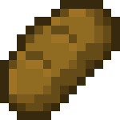

<h1>Minecraft Bread</h1>

<h2>Description</h2>
<p>Bread is one of the staple Minecraft foods.</p>
<h2>Ingredients</h2>
<ul>
  <li>Wheat x3</li>
</ul>
<h2>Steps</h2>
<ol>
  <li>Place 3 wheat in a row within the crafting grid.</li>
  <li>The vertical placement of the row does not matter.</li>
</ol>
